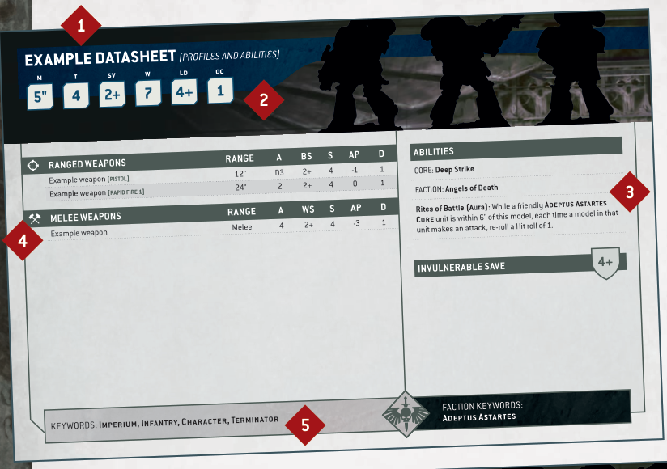
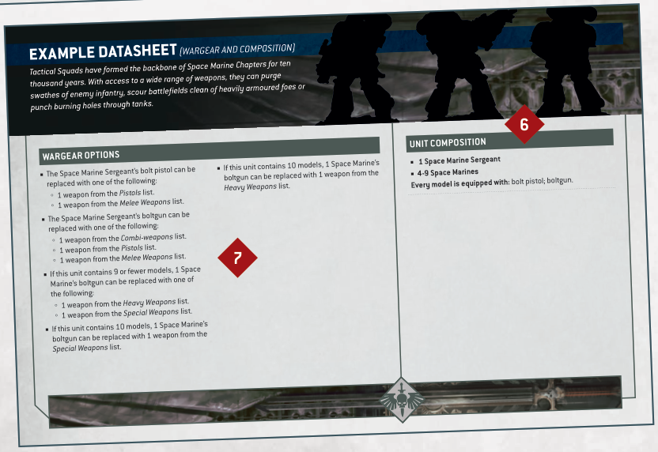

Each unit has a datasheet that lists the characteristics, wargear, abilities and keywords of its models. This section presents a summary of these elements and how they relate to playing the game.

